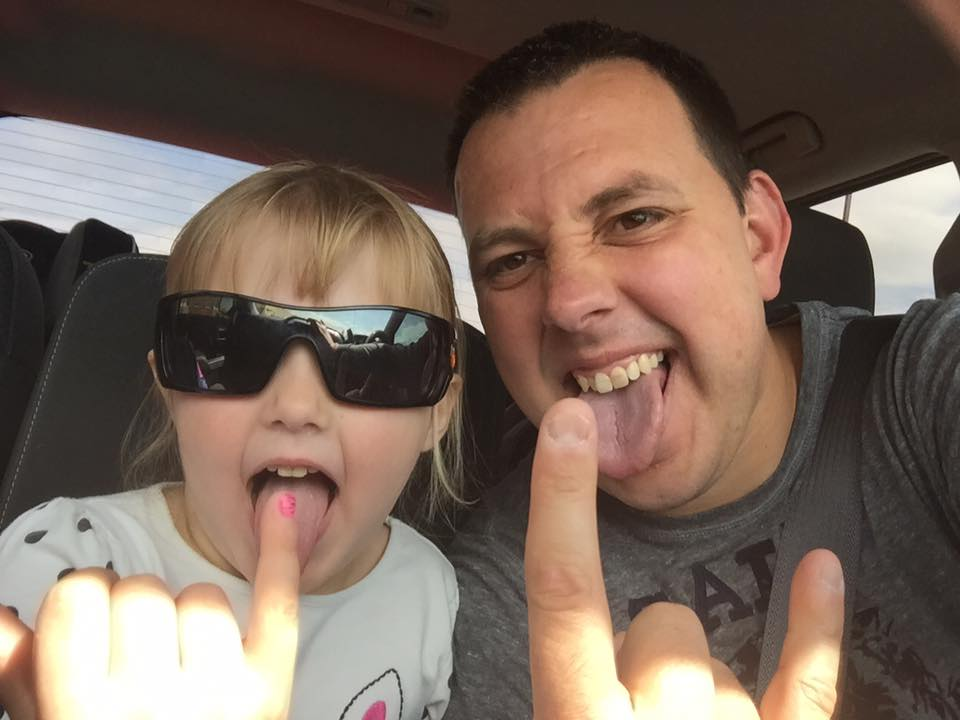
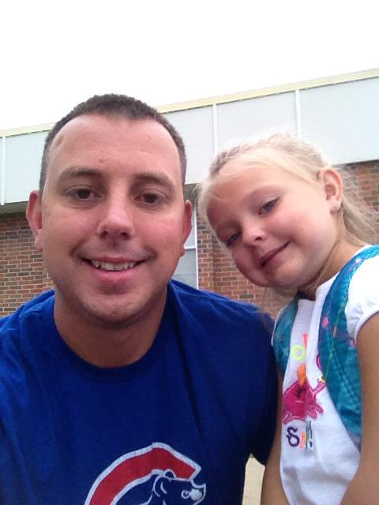

The Childers Family Story
This page is about my family and just how wonderful they are!
My family consists of my wife Tori, my daughters Lilly-Ann, Gabby, and Olivia, and my son Greyson.
Tori Childers
I met my wife one December night at Olive Garden. I remember when I walked into the door and saw her for the first time, I just knew this was going to be a one night date. She was absolutely stunning and I felt there was no way I was in her league and that I was lucky to even be there. We ordered our dinner and to this day I give her a hard time because she only ate 3 noodles. At the end of the night she seemed to have enjoyed herself and sure enough I was able to secure another date and eventually marriage.Greyson Alexander Kade Childers
Me and my wife chose this name because we both really liked it. My wife chose the two middle names becasue she was named with two and felt that it was a good thing to have her kids named like her. Greyson is our only boy and he is without a doubt the sweetest boy a mom and dad could ask for. He loves video games and his favorite is Super Mario Odysey! Greyson could sit in front of the television and play this game for hours on in. When Greyson is not consumed by video games, he loves to be the roughest kid possible (I take no blame for this)! He loves to wrestle with his Dad and his sisters on pretty much a non stop basis. With this said he is without a doubt one of the sweetest and kindest kids you'll ever meet!

Gabrielle Sophia Elyse Childers
Gabby is our 7 year old little girl who is quickly growing up on us. She is a big helper around our house, and loves to play with her American Girl dolls. Gabby can be a bit sassy at times but overall she is a sweet little girl who mom and dad loves very much. Gabby will be entering the 2nd grade this year and we know she's excited to be moving on. Gabby's favorite thing to do is kick it with her Gram's! Gabby loves to go over there and swim in her pool, go on what seem to be endless shopping spree's and the countless lunch dates Grammy has with everybody. Yep, Gabby and Grammy are two peas in a pod to say the least!Olivia Madeline Grace Childers
Oliva is our special little girl. Olivia was born several weeks early due to some pregnancy complications with her momma. I'll never forget the night when what seemed to be a SWAT team rushed into our hospital room and took my wife away in a blink of an eye. I remember shortly after the doctors walking in and telling me to put a gown on. Afterwards they escorted me to this other room and as they was doing so I saw a baby crying on a table with nurses all around her. The nurse who was escorting me asked me if I wanted to hold my little girl. With a puzzled look on my face I asked her what she was talking about. The nurse explained that the little girl lying on the table crying was in fact my daughter! Needless to say from that point on she has just been the most amazing little girl and I wouldn't trade the experiances away for anything.
